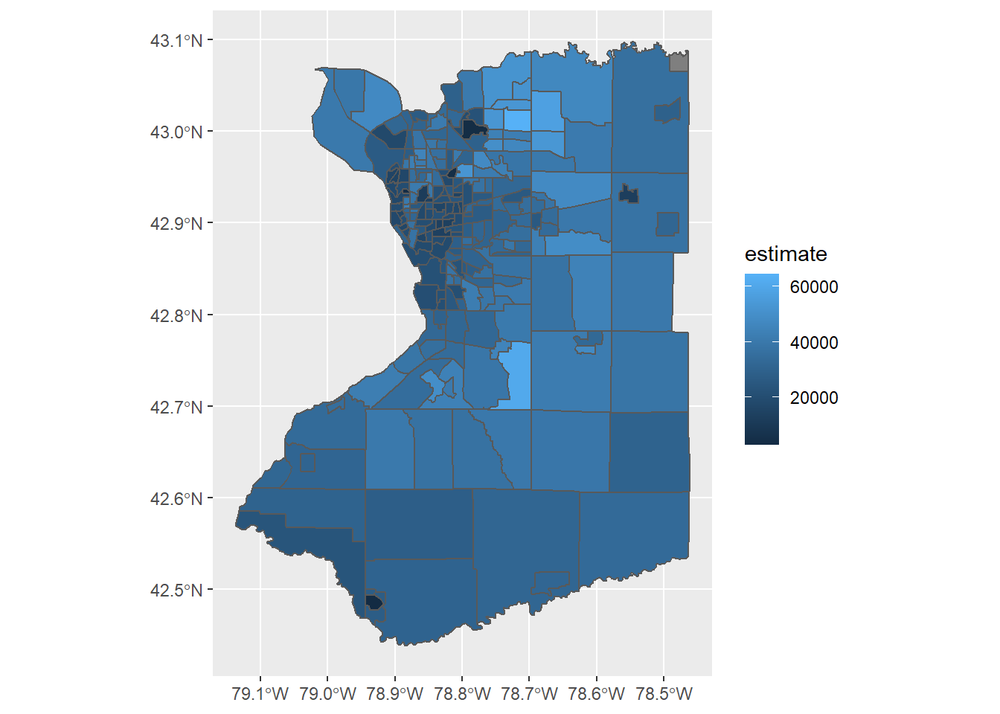
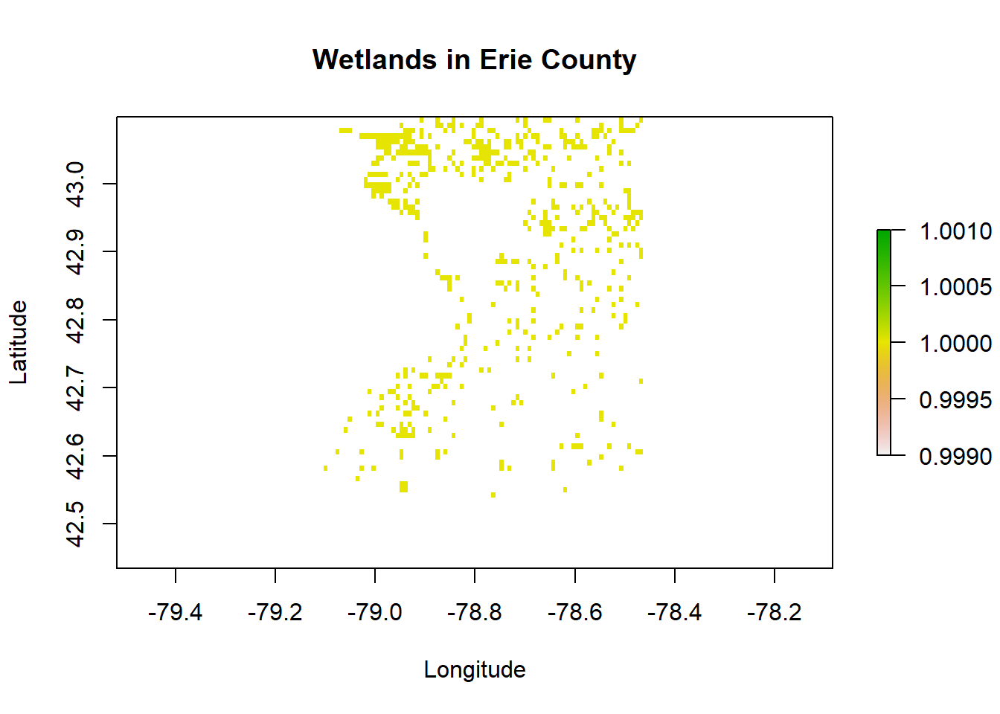

Ecological Justice as Seen Through a Wetland Lens in Erie County
Relationship between wetland proximity and median annual income in Erie County, NY
Maris Grundy
Introduction
The importance of intact ecosystems to human society can be understood through the lens of ecosystem services. Ecosystem services include direct and indirect resources and processes that support life on Earth (Wratten et al. 2013). Changes to ecosystems disrupt the ability to provide ecosystem services (Carpernter et al. 2006). Urbanization is one of the largest drivers of ecosystem degradation due to land use change and habitat fragmentation from agriculture, housing, and infrastructure development (McCauley et al. 2013). The impacts of ecosystem loss from urbanization are not reflected equally within society. Instead, these losses reflect larger societal inequalities present in cities (Schell et al. 2020). Historical urban development practices rooted in structural racism and classism have led to current inequality of proximity green spaces in cities, with wealthier and whiter neighborhoods containing more trees, green space and biodiversity (Schell et al. 2020).
Buffalo, New York provides an example of an urban area that exhibits wealth inequality, with disproportionate negative impacts of environmental degradation being carried by lower income households (Krieg 2005). Buffalo is within Erie County, known for its location on the Great Lakes and surrounding freshwater watershed.
To see if wetland proximity follow the same pattern of connection with income disparity, this project will look at spatial distribution of intact wetlands in Erie County as it relates to median household income. I hypothesize that mean annual income will have an inverse relationship with geographic closeness to wetlands.
Materials and methods
This project aims to uncover the relationship between median household income and proximity to wetlands in Erie County. To carry out this query, I used two data sources:
First I got a Census key, which allows me to download data from the census website onto r.
Next, I wrote code to gather data from the US Census website. Specifically, I was interested in getting the median household income in 2019 for homes at the tract level in Erie County, NY. I used data from the American Community Survey 1-year.
For the wetland data I used the above link to search for the watersheds that cover Erie County. This search returned two watersheds: the Buffalo Eighteenmile watershed (HUC 04120103) and the Niagara watershed (HUC 04120104). These data were downloaded as shapefiles. To work with them, these shapefiles were merged, then converted to raster in r.
After getting both datasets into raster form and prepping the basemap, I made a raster sandwich! I created an overlay of median income data and wetland data. These datasets share geospatial information, so the overlay was possible.
Here’s the magical r code I created:
Load Packages
library(spData)
library(sf)
library(units)
library(ggplot2)
library(viridis)
library(broom)
library(dplyr)
library(tidycensus)
library(choroplethr)
library(choroplethrMaps)
library(raster)
library(rasterVis)
library(tidyverse)
library(ggpmisc)
library(lwgeom)
knitr::opts_chunk$set(cache=TRUE) Download and clean all required data
#load population data
#first you need a Census key
#census_api_key("d7a2cd0f27c540f5b9cef151c8472838c33d797f", overwrite= TRUE, install= TRUE)
census_api_key(Sys.getenv("CENSUS_API_KEY"))
#identify variables for consideration
v1 <- load_variables(2019, "acs1", cache=TRUE)
#View(v1)
# crop to domain (Erie County, tract level)
census_data<- get_acs(geography="tract",
variables= "B07011_001",
year=2019,
state="NY",
county = "Erie",
geometry= TRUE)
# define census region using a spatial bounding box and rasterize data
bbox<-st_bbox(census_data)
domain <- raster(resolution=0.008,crs=projection(census_data),
xmn=bbox$xmin,xmx=bbox$xmax,ymn=bbox$ymin,ymx=bbox$ymax)
#load watershed data and bind watersheds of interest into one raster
require(sf)
wetlands <- bind_rows(
read_sf(dsn = "Data/HU8_04120103_Watershed_erie/HU8_04120103_Wetlands.shp"),
read_sf(dsn = "Data/HU8_04120104_Watershed_niagara/HU8_04120104_Wetlands.shp")
)%>%
st_transform(projection(census_data))
wetlands_raster=rasterize(as(wetlands,"Spatial"),domain,field=1)
wetlands_distance=distance(wetlands_raster)Here is a figure showing Erie County broken into Census tracts
ggplot(census_data)+
geom_sf()
The following displays how wetlands are distributed in Erie County
#Here are how the wetlands are distributed in Erie County
plot(wetlands_raster, main= 'Wetlands in Erie County', xlab='Longitude', ylab='Latitude')
plot(wetlands_distance, main='Proximity to wetlands in Erie County', xlab='Longitude', ylab='Latitude',asp=1)
Results
##Here’s a histogram of the distribution of wetlands in Erie County by Distance This shows us how frequently a specific distance to any wetland occurs
dist_wetland <- hist(wetlands_distance, breaks=10, main='Distribution of Wetlands by Distance', xlab='Distance in Meters', col="chartreuse4")
dist_wetland$counts## [1] 3415 1346 717 430 381 319 224 100 34 6Wetland raster deliniated by census tract
#Now, breaking apart wetland vector by census tract
sf::sf_use_s2(FALSE)## Spherical geometry (s2) switched offwetlands_intersected<-wetlands %>%
st_intersection(census_data)%>%
group_by(GEOID)%>%
summarize(wetland_area=sum(st_area(geometry)),wetland_count=n())%>%
st_set_geometry(NULL)
#Select only GEOID, wetland_area, wetland_count
dplyr::select(wetlands_intersected, "GEOID", "wetland_area", "wetland_count")## # A tibble: 165 x 3
## GEOID wetland_area wetland_count
## <chr> [m^2] <int>
## 1 36029000110 1270466. 36
## 2 36029000200 18516. 1
## 3 36029000500 706793. 2
## 4 36029000900 24646. 2
## 5 36029001000 124754. 6
## 6 36029001100 159181. 4
## 7 36029001900 3737. 2
## 8 36029003000 22687. 1
## 9 36029003301 3327. 1
## 10 36029003400 9668. 1
## # ... with 155 more rows#left_join wetlands intersected with census data(L) by GEOID
major_table<- left_join(census_data, wetlands_intersected)
#compare column titles I care about
plot1<-ggplot(major_table, aes(estimate, as.numeric(wetland_area)))+
geom_point(colour='green4')+
geom_smooth()
plot1 + labs("Median Income vs Wetland Area",
x="Median Income", y="Wetland Area")
#mean distance with income
census_data$meandist<- raster::extract(wetlands_distance, census_data, fun=mean)
plot2<- ggplot(census_data, aes(fill= meandist))+
geom_sf()
plot2
#median distance with income
census_data$mediandist<- raster::extract(wetlands_distance, census_data, fun=median)
plot3<- ggplot(census_data, aes(fill= mediandist))+
geom_sf()
plot3
Here’s where I could use some help!
#The final figure I would like to create isn't working, but I am attempting to create
#a choropleth map filled with mean distance to wetland overlaid with a bubble map showing
#estimated income in census tract. If you have suggestions please help! This is attempt
#one million.
census_data$meandist<- raster::extract(wetlands_distance, census_data, fun=mean)
census_data_point <- census_data %>% st_centroid()
plot4<- ggplot() +
geom_sf(data = census_data, aes(fill = meandist)) +
geom_sf(data = census_data_point, aes(size = estimate, color = estimate)) +
scale_fill_continuous(type = "viridis") +
# scale_color_viridis(option="magma", trans="log",
# name='Income ($)') +
theme_void() + coord_sf()
plot4
ggplot(data = census_data) +
geom_sf(aes(fill = estimate))
library(tmap)
tmap_mode("view")
tm_shape(census_data) +
tm_polygons(col = "estimate")
mapview::mapview(census_data, zcol = "estimate")
plot4Conclusions
There is evidence of a relationship between mean income and proximity to a wetland within census tracts in Erie County. The choropleth/bubble map displaying wetland count and median income shows an inverse relationship between these variables.
As shown in the figure comparing median income with wetland area, wetland area increases with median income until approximately $58,000, after which it begins to decrease.
While these findings did not suggest a strong relationship between variables considered, they support the spatial discrepancy between impoverished communities in Erie County and proximity to wetlands. In the maps displaying wetland distribution and proximity to wetlands, close proximity excludes the downtown core in the City of Buffalo. People living in poverty within the city limits have a greater distance to travel to access a wetland. Persons living in poverty in the City of Buffalo include 30% of residents, which is higher than the national average of 11.4% (“U.S. Census Bureau QuickFacts” n.d.).
References
Carpenter, S. R., E. M. Bennett, and G. D. Peterson. 2006. Scenarios for Ecosystem Services: An Overview. Ecology and Society 11.
Krieg, E. J. 2005. Race and Environmental Justice in Buffalo, NY: A ZIP Code and Historical Analysis of Ecological Hazards. Society & Natural Resources 18:199–213.
Schell, C. J., K. Dyson, T. L. Fuentes, S. Des Roches, N. C. Harris, D. S. Miller, C. A. Woelfle-Erskine, and M. R. Lambert. 2020. The ecological and evolutionary consequences of systemic racism in urban environments. Science 369:eaay4497.
U.S. Census Bureau QuickFacts: Buffalo city, New York. (n.d.). . https://www.census.gov/quickfacts/buffalocitynewyork.
U.S. Census Bureau QuickFacts: United States. (n.d.). . https://www.census.gov/quickfacts/fact/table/US#.
Wetlands Mapper. (n.d.). . https://www.fws.gov/wetlands/data/mapper.html.
Wratten, S., H. Sandhu, R. Cullen, and R. Costanza, editors. 2013. Ecosystem Services in Agricultural and Urban Landscapes. First edition. Wiley.